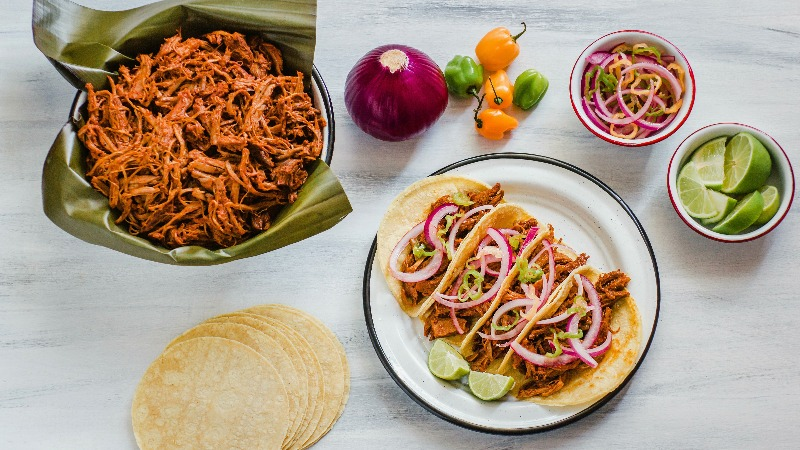

This cochinita pibil recipe is straight from Mexico. Pork shoulder is cooked in a spicy red annatto sauce, then shredded and served with habanero sauce.
Ingredients
Marinade:
- 3 ounces achiote paste
- 1 white onion, chopped
- 2 cloves garlic
- 2 cups orange juice
- ½ cup lemon juice
- ¼ cup white vinegar
- 2 tablespoons salt
- 1 tablespoon ground black pepper
- 1 tablespoon dried Mexican oregano
- 5 pounds pork shoulder roast
- salt and freshly ground black pepper to taste
- 1 tablespoon lard
Habanero Sauce:
- 1 red onion, chopped
- 3 habanero chiles, seeded and sliced
- ¼ cup lemon juice
- ¼ cup white vinegar
- 1 cup lukewarm water
- sea salt and ground black pepper to taste
- dried oregano
Steps
- Combine achiote paste, white onion, garlic, orange juice, lemon juice, 1/4 cup vinegar, 2 tablespoons salt, 1 tablespoon black pepper, and 1 tablespoon Mexican oregano in a blender; blend marinade until smooth.
- Rub pork with salt and pepper and place in a pressure cooker. Add lard and pour marinade over pork. Add 2 cups water. Close cooker securely and place pressure regulator over vent according to manufacturer's instructions. Heat to High heat until steam escapes in a steady flow and makes a whistling sound, about 5 minutes. Reduce heat to medium-low or low. Cook for 45 minutes from the start of the whistling sound. Let pressure release naturally according to manufacturer's instructions, 5 to 10 minutes. Unlock lid and transfer pork to a large platter.
- Prepare the habanero sauce while the meat is cooking. Combine red onion and habanero chiles in a gravy boat. Add 1/2 cup lemon juice, 1/4 cup white vinegar, and warm water. Season with salt, pepper, and dried oregano and mix until everything is well combined.
- Shred meat with 2 forks and return to the pressure cooker with the cooking juices. Bring to a boil over medium-high heat and cook uncovered until cooking juices have reduced, about 30 minutes. Serve with habanero sauce.
Cook's Notes:
For an even more intense flavor and if you have the time, cover meat with annatto sauce and marinate for about 8 hours.
Be careful when handling the peppers as they are very spicy and you might want to wear gloves.